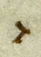
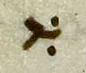
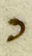
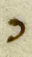
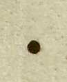
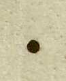
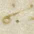
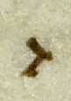
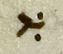
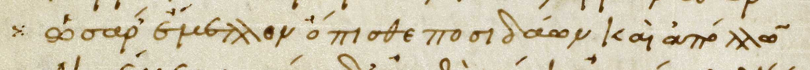

Blank Slide
The Composition of Venetus A with Regard to Aristarchan Critical Marks.
Intro
Where are we?
- 12.26-12.50
- Wall being destroyed
- Hector begins charge on the Greeks
Aristarchan Critical Marks
- Aristarchus was a librarian who edited Homeric texts
- General format:
- Mark  

 
 
 
 - ὅτι or 
- Mark  
Diple
Something interesting here!!


Dotted Diple
Something interesting here related to Zenodotus!!
 
Now time for something actually interesting...
Example 1


ὄτι αντὶ τοῦ στέφηται
Example 2


But wait... Theres more!!

ὄτι ἀντὶ ἀνδρείως δὲ θνήσκει
Conclusion
- Unusual usage of Aristarchan marks
- Multiple sources
- Multiple passes